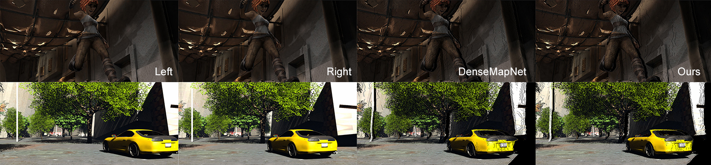
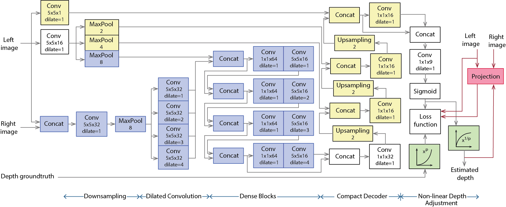

Fast Depth Estimation for View Synthesis
University of Bristol
Braendler Engineering
Braendler Engineering
University of Bristol



About
This work is part of the project developing roboticised inspection systems that take people out of dangerous working environments. Palintir enables the remote capture of precise 3D data from harsh industrial spaces (eg offshore turbines) utilizing drones, ROVs, and crawlers. Enhanced AI analysis then produces fast and accurate inspection results through an intuitive software interface.
- Funder
- Innovate UK ref 103990
Abstract
Disparity/depth estimation from sequences of stereo images is an important element in 3D vision. Owing to occlusions, imperfect settings and homogeneous luminance, accurate estimate of depth remains a challenging problem. Targetting view synthesis, we propose a novel learning-based framework making use of dilated convolution, densely connected convolutional modules, compact decoder and skip connections. The network is shallow but dense, so it is fast and accurate. Two additional contributions - a non-linear adjustment of the depth resolution and the introduction of a projection loss, lead to reduction of estimation error by up to 20% and 25% respectively. The results show that our network outperforms state-of-the-art methods with an average improvement in accuracy of depth estimation and view synthesis by approximately 45% and 34% respectively. Where our method generates comparable quality of estimated depth, it performs 10 times faster than those methods.
Achitecture

Talk
Citation
@INPROCEEDINGS{9287371,
author={N. {Anantrasirichai} and M. {Geravand} and D. {Braendler} and D. R. {Bull}},
booktitle={2020 28th European Signal Processing Conference (EUSIPCO)},
title={Fast Depth Estimation for View Synthesis},
year={2021},
pages={575-579},
doi={10.23919/Eusipco47968.2020.9287371}}